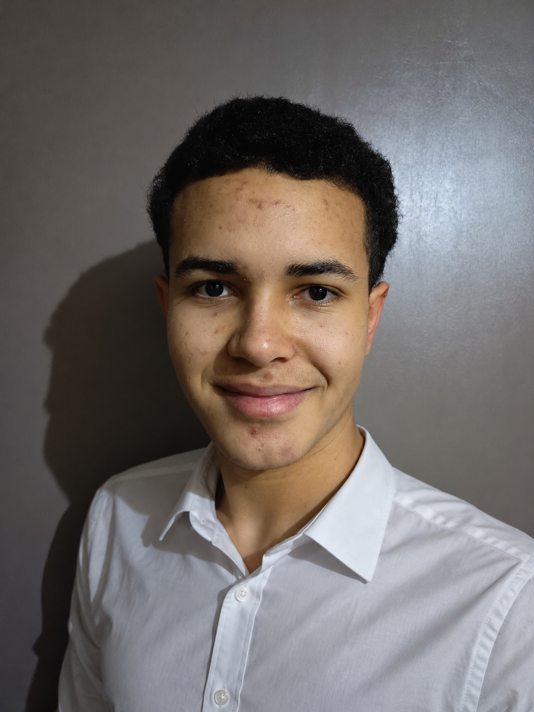
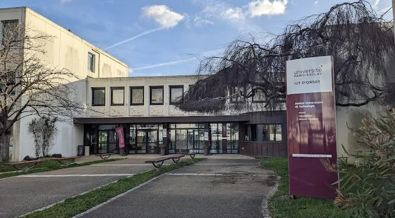
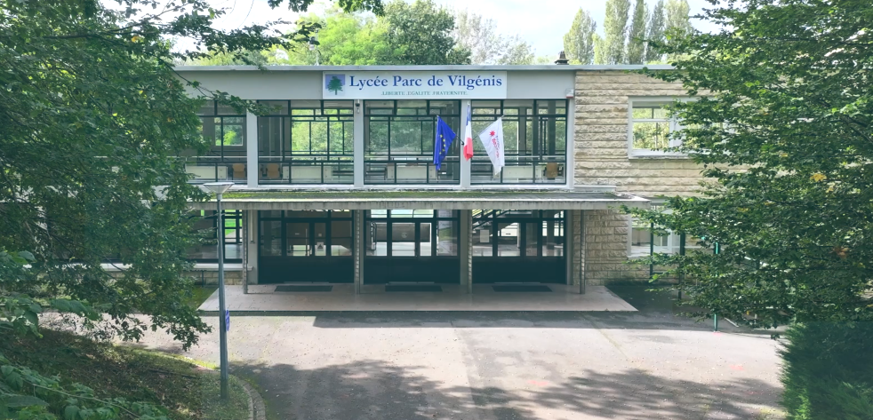
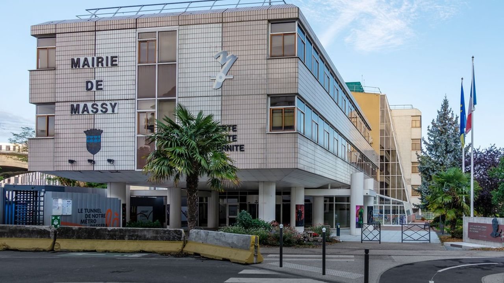
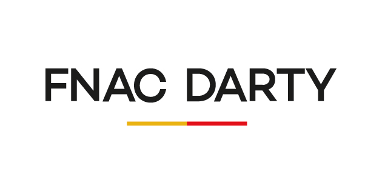
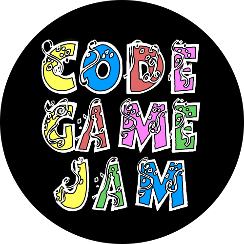
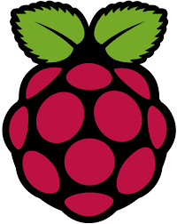

Étudiant en 2e année de BUT Informatique à l'IUT d'Orsay (Université Paris-Saclay), je me forme au développement logiciel et web. J'aime comprendre comment fonctionnent les systèmes et construire des solutions claires et fiables.
Mon parcours m'a donné de solides bases en programmation (C++, Java), en développement web (HTML, CSS, PHP), en bases de données (SQL) et en systèmes et réseaux, mises en pratique dans des projets universitaires et lors de deux expériences en maintenance informatique.
Je recherche un stage de 8 à 10 semaines en informatique, à partir du 3 mai.


IUT d'Orsay – Université Paris-Saclay
2025 – aujourd'hui

Lycée Parc de Vilgénis
Spécialités : Mathématiques, Physique-Chimie
Option : Mathématiques expertes
Bases solides en C++ et Java : conditions, boucles, fonctions, programmation orientée objet et algorithmique.
Création de pages web en HTML et CSS, structuration du contenu, mise en forme et bases de PHP.
Création, modification et consultation de bases relationnelles (MySQL, Oracle) avec SQL, et analyse de données avec Python.
Utilisation de Windows et Linux, bases des architectures réseau, de l'adressage IP et des protocoles.
Git et GitLab pour le suivi de projets, Visual Studio, Eclipse et Code::Blocks pour développer.
Assistance aux utilisateurs, suivi d'un parc informatique (PC, tablettes, périphériques) et gestion de bases de contacts.
Langues : français (langue maternelle), anglais et espagnol (niveau scolaire).

Emploi saisonnier – août 2025

Stage de découverte – février 2022
Projet universitaire : création, insertion et exploitation de données en SQL, puis calculs, statistiques et indicateurs avec Python pour analyser les résultats.
Technologies : SQL, Python
Application Java inspirée de Letterboxd : consulter les fiches de films, attribuer des notes, rédiger des commentaires et lire les avis des autres utilisateurs.
Technologies : Java
Étude des besoins d'une entreprise de voyage fictive pour cadrer la conception de son système d'information.
Domaine : analyse des besoins
Création d'un site web fictif d'agence de voyage : présentation de destinations, d'offres et d'informations pratiques, avec une page structurée en HTML et mise en forme en CSS.
Technologies : HTML, CSS
Codage guidé d'un jeu vidéo en 2D en C++ : mise en pratique de la programmation orientée objet et de la logique de jeu.
Technologies : C++

Concours de programmation : concevoir et développer un jeu vidéo en équipe de 4, en développement continu pendant 30 h (gameplay et logique de jeu).
Technologies : Lua, LÖVE2D

Découverte de Linux et du terminal, installation de services et manipulation d'un Raspberry Pi pour comprendre les systèmes embarqués.
Technologies : Linux, terminal, Raspberry Pi
Un stage où je peux contribuer à de vrais projets informatiques (développement, bases de données, support) et progresser auprès d'une équipe.